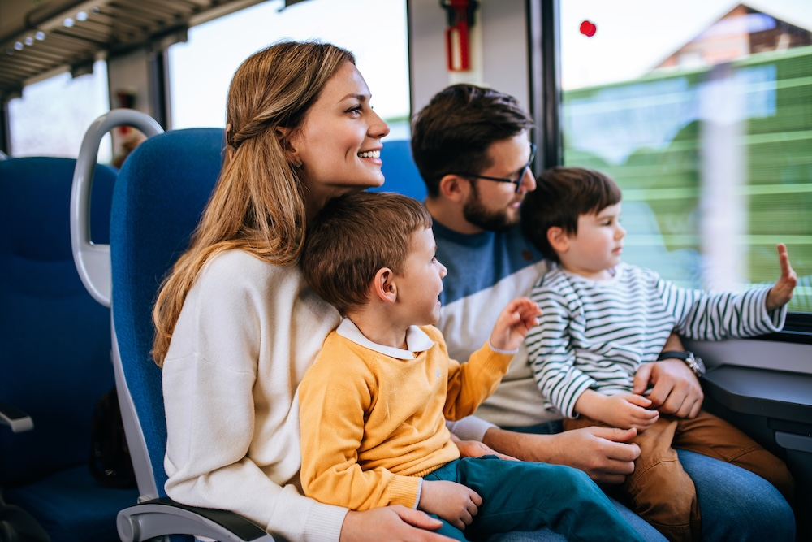

Transportation Cheat Sheet
When you only have 24 hours, transportation can make or break the trip. The best option is the one that saves time without creating extra stress or surprise costs. Start by estimating the total travel time door-to-door, not just the drive time or flight time. For example, airports usually require extra time for parking, security, and walking to the gate, so a short flight can still take half the day. If you are going to a city, choose transportation that drops you near the areas you actually want to explore. For smaller towns or scenic stops, driving gives you the most flexibility. No matter what you choose, plan the return trip early so you are not scrambling at the end of the day.

Fast Ways to Save Time
- Pick a destination with a simple route and few transfers.
- Travel outside rush hour when possible.
- Buy tickets in advance and screenshot confirmations.
- Pack light so you can move faster and skip baggage delays.
- Build a 30–60 minute buffer for traffic or lines.
Helpful Transportation Links
- Rome2rio – Compare transportation options.
- Google Maps – Transit routes and live traffic.
- TSA Security Screening – Airport screening info.
- Weather.com – Check weather before you leave.